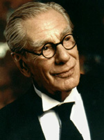

Актори фільму "Бетмен" 1989

Майкл Ки́тон — американский актёр. Широко известен как исполнитель роли Бэтмена и Битлджуса в одноимённых фильмах режиссёра Тима Бёртона[3].
В 2014 году возродил свою популярность после главной роли полузабытого актёра Риггана Томпсона в чёрной комедии Алехандро Гонсалеса Иньярриту «Бёрдмэн». Фильм высоко оценили мировые критики, а игра Китона отмечена премией «Золотой глобус» в категории «Лучшая мужская роль — комедия или мюзикл» и номинациями на BAFTA и «Оскар».
Джон Джо́зеф (Джек) Ни́колсон — американский актёр, кинорежиссёр, сценарист и продюсер.
Николсон считается одним из величайших актёров в истории кино. Он является рекордсменом по наибольшему количеству актёрских номинаций на «Оскар» (12), а также одним из трёх трёхкратных лауреатов среди мужчин[1]. Кроме того, он — один из актёров[2], номинированных на «Оскар» за лучшую роль (главную или второго плана) в четырёх разных десятилетиях подряд. В 1994 году, в возрасте 57 лет, он стал одним из самых молодых актёров, награждённых премией Американского института киноискусства за жизненные достижения[3]. Джек Николсон также является обладателем множества других наград, в том числе BAFTA, семи «Золотых глобусов», шести премий Национального совета кинокритиков США и премии Гильдии киноактёров США.
Ма́ртин Пэ́ттерсон Хингл — американский актёр.
За почти 60 лет в кинематографе Пэт Хингл снялся в таких известных фильмах, как «Сияние» (1997), «Миллионы Брюстера» (1985) и «Кидалы» (1990), однако наибольшую популярность ему принесла работа в кинокартинах «Бэтмен» (1989), «Бэтмен возвращается» (1992), «Бэтмен навсегда» (1995) и «Бэтмен и Робин» (1997).
Наибольшую известность Хинглу принесла роль комиссара полиции Джеймса Гордона в серии фильмов про Бэтмена. Вместе с Майклом Гофом, который играл роль дворецкого Альфреда, они были единственными актёрами, которые участвовали во всех четырёх фильмах о Бэтмене в 1989—1997. Последний раз Хингл появился в роли комиссара полиции Гордона в фильме «Бэтмен и Робин», где работал с Умой Турман. Хингл также работал с Кристианом Бейлом в фильме «Шафт» (2000).

Ма́йкл Гоф или Гаф — британский актёр.
Дебютировал в кино в 1948 году. Играл в основном в британских телевизионных фильмах. Сыграл более 150 ролей в кино и на телевидении.
Наиболее известен широкой публике как исполнитель роли дворецкого Альфреда в четырёх фильмах про Бэтмена: «Бэтмен», «Бэтмен возвращается», «Бэтмен навсегда» и «Бэтмен и Робин».